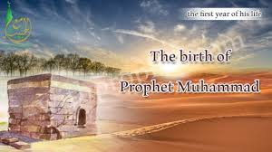
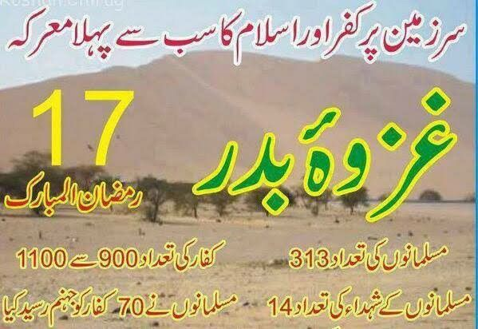

 The Prophet Is Born One day, while travelling north, one of the Arab tribes from Mecca met a hermit in the desert. Some of the men stopped to speak with him. Hermits were known to be wise and the Arabs often asked their advice. The hermit asked where they had come from. When they replied that they were from Mecca, he told them that Allah would soon send a prophet, who would come from their people. They asked the name of this prophet and the hermit answered that his name would be Muhammad and that he would guide them to a new way of life. Meanwhile in Mecca, Aminah, although saddened by the loss of her husband, felt especially well and strong as she awaited the birth of her baby. During this time she dreamt of many things. On one occasion it was as if a great light were shining out of her, and on another she heard a voice telling her that she would have a boy and that his name would be Muhammad. She never forgot that voice but she told no one about it. On Monday, the twelfth day of Rabi al-Awwal in the Year of the Elephant, Aminah gave birth to a son. Allah sends man many signs when one of His chosen Prophets is born and on that twelfth day of Rabi alAwwal in the year 570 A.D, many such signs were seen. Some were seen by Jewish scholars who had read in their scriptures of a coming Prophet. One of these learned men in Yathrib, for instance, saw a brilliant new star he had never seen before as he studied the heavens that night. He called the people around him and, pointing the star out to them, told them a Prophet must have been born. That same night another Jew was passing by the meeting place of the leaders of Quraysh in Mecca. He asked them if a baby boy had just been born and told them that if it were true, this would be the Prophet of the Arab nation. Aminah sent news of the birth to her father-in-law, 'Abd al-Muttalib, who was sitting near the Ka'bah at the time. He was very happy and began at once to think of a name for the boy. An ordinary name would not do. Six days came and went and still he had not decided. But on the seventh day, as he lay asleep near the Ka‟bah, 'Abd al-Muttalib dreamt that he should give the baby the unusual name of Muhammad, just as Aminah herself had dreamt. And the child was called Muhammad (pbuh), which means 'the Praised One'. When 'Abd al-Muttalib told the leaders of Quraysh what he had named his grandson, many of them asked, 'Why did you not The Life of the Prophet Muhammad (Peace and blessings of Allah be upon him) 14 choose the sort of name that is used by our people?' At once he replied, 'I want him to be praised by Allah in the heavens and praised by men on
The First Muslims After that momentous day in the month of Ramadan, Revelation came again and again to the Prophet (pbuh). He understood now what he had to do and prepared himself for what was to come. Only a strong and brave man, helped by Allah, can be a true prophet because people often refuse to listen to Allah's message. Khadijah was the first to believe the Prophet (pbuh) and accept as true what he brought from Allah. Through her, Allah made things easier for the Prophet (pbuh). Khadijah strengthened him, helped him spread his message, and stood up to the people who were against him. Then Revelation ceased for a time. The Prophet (pbuh) was upset and unhappy, thinking that Allah had left him, or that he might have angered Allah in some way so that Allah no longer thought him worthy of His message. However, the Archangel Gabriel came back to him and brought this surah, or chapter, of the Qur'an: In the Name of Allah, the Beneficent, the Merciful “By the morning hours, And by the night when it is stillest, Thy Lord hath neither forsaken thee nor doth He hate thee, And verily the Last will be better for thee than the First. And verily thy Lord will give unto thee so that thou wilt be content. Did He not find thee an orphan and protect thee? Did He not find thee wandering and guide thee? Did He not find thee destitute and enrich thee? Therefore the orphan oppress not, Therefore the beggar drive not away, And as for thy Lord's blessing, declare it”. (Qur'an: 93.1-11) The Prophet (pbuh) began to speak secretly of Allah's message to those Who were close to him and whom he could trust. At that time Mecca was going through hard times. There was very little food to be had. Abu Talib, the Prophet's uncle, who had taken care of him after his grandfather's death, was finding it very difficult to feed his large family. The Prophet (pbuh) said that he and another uncle, al-'Abbas, who was a rich man, would each bring up one of Abu Talib's children in order to help him. The Prophet (pbuh) took „Ali and his uncle took Ja‟far. One day, when the Prophet (pbuh) was outside the city, the Archangel Gabriel appeared to him. The Archangel kicked the side of a hill and a spring of water began to flow out. He then began to wash himself in the running water to show the Prophet (pbuh) the ritual ablution to be made before prayer. Then the Archangel showed him all the positions of Muslim prayer-the various movements and things to be said with each
بدر کی جنگ وہ مسلمان جو مدینہ چلے گئے تھے، انہوں نے اپنے تمام سامان و اسباب مکّہ میں چھوڑ دیے تھے اور ان کا مال ان کے دشمنوں نے قبضہ کر لیا تھا۔ چنانچہ جب مسلمانوں نے سنا کہ ابوسفیان، جو قریش کے سرداروں میں سے ایک تھا، شام سے مکّہ ایک بڑے قافلے کے ساتھ واپس جا رہا ہے، تو انہوں نے فیصلہ کیا کہ اب وقت آگیا ہے کہ وہ اپنے کچھ نقصانات پورے کریں۔ نبی اکرم ﷺ نے مسلمانوں کو اس حملے کی اجازت دی اور سب لوگ اس چھاپے کے لیے تیاری کرنے لگے، کیونکہ یہ وحی نازل ہوئی تھی: "اجازت دی گئی ہے ان لوگوں کو لڑائی کی جن سے قتال کیا جا رہا ہے کیونکہ ان پر ظلم ہوا ہے؛ اور بے شک اللہ ان کی مدد کرنے پر قادر ہے۔" (القرآن 22:39) وحی میں ذکر کیا گیا تھا کہ اللہ کے نزدیک سب سے سنگین بات یہ ہے کہ لوگوں کو اللہ کے راستے سے روکا جائے، اس کا انکار کیا جائے، اور مسجدِ حرام سے روکا جائے اور اس کے لوگوں کو وہاں سے نکالا جائے… کیونکہ ظلم (فتنہ) قتل سے بھی بڑھ کر ہے۔ (القرآن 2:217) اپنے سامان کی واپسی مسلمانوں کا واحد مقصد نہ تھا۔ وہ یہ نہیں چاہتے تھے کہ صرف مدینہ میں محفوظ بیٹھے رہیں؛ وہ اسلام کا پیغام پھیلانا چاہتے تھے۔ ان کا ماننا تھا کہ اگر قریش کو آزادی ہے کہ وہ محفوظ تجارت کریں تو مسلمانوں کو بھی آزادی ہونی چاہیے کہ وہ اللہ پر ایمان لائیں، اس کے رسول ﷺ کی پیروی کریں اور اس کا کلام پھیلائیں۔ اس لیے یہ سوچا گیا کہ قریش کو یہ بات سمجھانے کا بہترین اور واحد طریقہ یہ ہے کہ ان چیزوں پر حملہ کیا جائے جو ان کے لیے سب سے زیادہ اہم ہیں — یعنی قافلہ۔ ادھر ابوسفیان نے مسلمانوں کے منصوبے کی خبر سنی اور فوراً مکّہ قریش کو پیغام بھیجا کہ قافلہ خطرے میں ہے اور مدد کی درخواست کی۔ نتیجتاً تقریباً تمام قریش اس کی مدد کو نکل کھڑے ہوئے۔ ان کے ساتھ ایک ہزار آدمی اور دو سو گھوڑے تھے۔ عورتیں بھی گئیں تاکہ مردوں کو اپنے گانوں سے جوش دلائیں۔ اس دوران نبی اکرم ﷺ اپنے ساتھیوں کے ساتھ روانہ ہوئے۔ یہ رمضان کا مہینہ تھا اور مسلمان روزے سے تھے۔ ان کی تعداد صرف تین سو پانچ تھی جن میں زیادہ تر انصار تھے، یعنی مدینہ کے لوگ۔ ان کے پاس صرف تین گھوڑے اور ستر اونٹ تھے، جن پر وہ باری باری سوار ہوتے تھے۔ وہ مدینہ سے کچھ فاصلے پر بدر کے علاقے میں پہنچے اور وہاں ڈیرے ڈال کر قافلے کی خبر کا انتظار کرنے لگے۔ پھر انہیں پتا چلا کہ قریش ایک بڑی فوج کے ساتھ مکّہ سے روانہ ہوچکے ہیں۔ اب صورتِ حال بدل گئی تھی۔ وہ اب قافلے پر چھاپہ نہیں مار رہے تھے بلکہ قریش سے لڑائی لڑنے والے تھے۔ نبی اکرم ﷺ نے اپنے ساتھیوں کو اکٹھا کیا تاکہ ان کی رائے معلوم کریں۔ سب سے پہلے ابوبکرؓ اور پھر عمرؓ نے، جو مکّہ سے آئے ہوئے مہاجرین تھے، بات کی اور کہا کہ وہ نبی ﷺ کی اطاعت کریں گے۔ لیکن نبی اکرم ﷺ انصار کی رائے سننا چاہتے تھے کیونکہ وہ نہیں چاہتے تھے کہ ان پر کوئی ایسا بوجھ ڈالیں جو وہ نہ چاہتے ہوں۔ انصار کے سرداروں میں سے ایک سعد بن معاذؓ اٹھے اور کہا: "ہم آپ پر ایمان لائے ہیں اور سب لوگوں کے سامنے قسم کھاتے ہیں کہ جو کچھ آپ لائے ہیں وہ سچ ہے۔ ہم نے آپ سے وعدہ اور عہد کیا ہے کہ سنیں گے اور اطاعت کریں گے۔ پس آپ جہاں چاہیں تشریف لے جائیں، ہم آپ کے ساتھ ہیں چاہے آپ ہمیں سمندر میں لے جائیں!" نبی اکرم ﷺ ان باتوں سے بہت خوش ہوئے اور جنگ کا فیصلہ کر لیا گیا۔ ادھر ابوسفیان نے معلوم کر لیا کہ مسلمان کہاں پڑاؤ ڈالے ہوئے ہیں۔ اس نے قافلے کا راستہ بدل دیا اور تیزی سے انہیں مسلمانوں کی پہنچ سے نکال کر لے گیا۔ پھر اس نے قریش کو خبر دی کہ قافلہ محفوظ ہے اور اب انہیں مکّہ لوٹ جانا چاہیے۔ لیکن قریش کے سردار غرور اور ہٹ دھرمی میں بھرے ہوئے تھے۔ وہ واپس نہ لوٹے کیونکہ وہ سب کو دکھانا چاہتے تھے کہ وہ کتنے طاقتور ہیں اور مسلمانوں کو ختم کرنا چاہتے تھے۔ اب بدر میں ایک وادی تھی جس کے قریب مدینہ کی سمت کئی کنویں تھے، اور مسلمانوں نے وہیں ڈیرے ڈالے، پیٹھ کے پیچھے کنویں رکھتے ہوئے۔ قریش وادی کے دوسری جانب اترے۔ مسلمانوں نے ایک حوض بنایا، اسے ایک کنویں سے پانی سے بھر دیا اور اس کے گرد رکاوٹ ڈال دی۔ پھر باقی کنویں بند کر دیے۔ اس طرح مسلمانوں کے پاس پانی محفوظ تھا اور قریش کو پانی حاصل کرنے کے لیے وادی عبور کر کے لڑنا پڑتا۔ جنگ سے ایک رات قبل مسلمانوں پر نیند طاری ہوگئی اور ایک زور دار بارش برسی۔ "جب اس نے تم پر نیند ڈال دی بطور اطمینان اپنی طرف سے اور آسمان سے پانی برسایا تاکہ تمہیں پاک کرے اور شیطان کی گندگی تم سے دور کرے اور تمہارے دلوں کو مضبوط کرے اور تمہارے قدم جما دے۔" (القرآن 8:11) جمعہ کی صبح، 17 رمضان، 2 ہجری (17 مارچ، عیسوی سال) دونوں فوجیں آمنے سامنے آگئیں۔ بارش قریش کی طرف زیادہ ہوئی تھی جس سے زمین کیچڑ بنی اور چلنا مشکل ہو گیا، مگر مسلمانوں کی طرف ریت سخت ہو گئی تھی اور چلنا آسان۔ نبی اکرم ﷺ نے چاہا کہ مسلمان صفوں میں لڑیں۔ جب سب تیار ہو رہے تھے تو آپ ﷺ نے دیکھا کہ ایک شخص صف سے آگے نکل آیا ہے۔ نبی اکرم ﷺ نے اسے تیر سے ہلکا سا دھکا دے کر فرمایا: "صف میں کھڑے ہو جاؤ!" وہ آدمی، سَوادؓ بولا: "آپ نے مجھے تکلیف دی، اے اللہ کے رسول! اللہ نے آپ کو عدل اور بھلائی کے لیے بھیجا ہے۔" نبی اکرم ﷺ نے اپنی قمیص اٹھا دی اور فرمایا: "آؤ، مجھے بدلہ لے لو۔" سوادؓ قریب آیا اور اس جگہ کو بوسہ دیا اور کہا: "اے اللہ کے رسول! آپ دیکھ رہے ہیں ہمارے سامنے کیا ہے اور شاید میں جنگ میں زندہ نہ رہوں۔ اگر یہ میرا آپ سے آخری وقت ہے تو میں چاہتا ہوں کہ میرا آخری عمل یہ ہو۔" کچھ دیر بعد وہ جنگ میں گئے اور شہید ہو گئے۔ نبی اکرم ﷺ نے صفوں کا معائنہ کیا اور پھر ایک جھونپڑی میں تشریف لے گئے جو کھجور کی شاخوں سے بنائی گئی تھی تاکہ وہاں سے جنگ کی نگرانی کریں۔ ابوبکرؓ آپ کے ساتھ رہے جبکہ سعد بن معاذؓ اور کچھ انصار باہر پہرہ دیتے رہے۔ جب نبی اکرم ﷺ نے قریش کی بڑی فوج کو پہاڑی سے اترتے دیکھا، جھنڈوں اور ڈھولوں کے ساتھ، تو آپ ﷺ نے دعا شروع کی: "اے اللہ! یہ قریش غرور اور تکبر کے ساتھ آ رہے ہیں، جو تیری مخالفت کرتے ہیں اور تیرے رسول کو جھوٹا کہتے ہیں۔ اے اللہ! اگر آج یہ چھوٹی جماعت (مسلمان) ختم ہوگئی تو پھر زمین پر کوئی باقی نہ رہے گا جو تیری عبادت کرے۔" "جب تم نے اپنے رب سے مدد مانگی تو اس نے جواب دیا: میں تمہاری مدد ایک ہزار فرشتوں سے کروں گا، جو پے در پے آئیں گے۔ اور اللہ نے اسے صرف خوشخبری بنایا تاکہ تمہارے دل مطمئن ہوں۔ اور مدد تو صرف اللہ کے پاس سے ہے۔ بے شک اللہ غالب اور حکمت والا ہے۔" (القرآن 8:9-10) پہلے جنگ اکیلے مقابلوں سے شروع ہوئی۔ قریش کے ایک آدمی نے قسم کھائی کہ وہ مسلمانوں کے حوض سے پانی پیے گا اور پھر اسے برباد کرے گا یا مارا جائے گا۔ نبی ﷺ کے چچا حمزہؓ آگے بڑھے اور اسے قتل کر دیا۔ پھر قریش کے تین بڑے سردار آگے آئے اور مبارزت (اکیلے مقابلے) کا اعلان کیا۔ نبی ﷺ نے علیؓ، حمزہؓ اور عبیدہ بن الحارثؓ کو بھیجا۔ حمزہؓ اور علیؓ نے اپنے مخالفین کو قتل کر دیا، جبکہ عبیدہؓ نے اپنے دشمن کو زخمی کیا اور خود بھی زخمی ہو گئے۔ پھر ان کے ساتھیوں نے قریشی کو مارا اور عبیدہؓ کو واپس لائے لیکن وہ زخموں کی تاب نہ لا سکے۔ اس کے بعد دونوں فوجیں آمنے سامنے ٹکرائیں اور ہر طرف جنگ چھڑ گئی۔ آسمان تیراندازی سے بھر گیا۔ مسلمانوں نے اپنی جگہ مضبوطی سے تھامی رکھی اور باوجود تعداد میں بہت کم ہونے کے انہوں نے عظیم فتح حاصل کی، قریش کی فوج کو شکست دی اور ان کے بیشتر سردار مارے گئے۔ ان میں ابوجہل اور اُمیہ بن خلف بھی شامل تھے، جسے اس کے سابق غلام بلالؓ نے قتل کیا۔ جب قریش نے دیکھا کہ ان کے سردار مارے گئے ہیں تو باقی بھاگ نکلے۔ نبی اکرم ﷺ نے مدینہ کو فتح کی خبر بھیجی۔ پھر مالِ غنیمت اکٹھا کر کے اسے مسلمانوں میں برابر تقسیم کیا۔ کچھ قریشی قیدی بنائے گئے اور نبی اکرم ﷺ نے حکم دیا کہ ان کے ساتھ اچھا سلوک کیا جائے یہاں تک کہ ان کے رشتہ دار آکر انہیں لے جائیں۔ "یہ تم نہ تھے جنہوں نے انہیں قتل کیا بلکہ اللہ نے انہیں قتل کیا؛ اور جب تم نے پھینکا تو تم نے نہیں پھینکا بلکہ اللہ نے پھینکا، تاکہ وہ ایمان والوں کو اپنے پاس سے ایک اچھا امتحان دے۔ بے شک اللہ سب کچھ سننے والا، جاننے والا ہے۔"